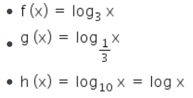

Funções Logaritmicas
Hablilidade EM13MAT305
Sobre a Habilidade
Resolver e elaborar problemas com funções logarítmicas nos quais seja necessário compreender e interpretar a variação das grandezas envolvidas, em contextos como abalos sísmicos, pH, radioatividade, Matemática Financeira, entre outros.
Resumo
A função logarítmica é a inversa da função exponencial. Ela é fundamental em diversos campos da matemática, pois ajuda a resolver equações em que a variável aparece como um expoente. O logaritmo permite transformar uma multiplicação de grandes números em uma soma, facilitando cálculos complexos. Além disso, a função logarítmica é crucial para modelar fenômenos de crescimento e decaimento, como no cálculo de juros compostos, em populações biológicas e até em processos físicos como a desintegração radioativa.
Detalhes
PA função logarítmica de base a é definida como f (x) = loga x, com a real, positivo e a ≠ 1. A função inversa da função logarítmica é a função exponencial.
O logaritmo de um número é definido como o expoente ao qual se deve elevar a base a para obter o número x, ou seja:
Definição de logarítmo

Domínio da função logarítmica
O domínio de uma função representa os valores de x onde a função é definida. No caso da função logarítmica, devemos considerar as condições de existência do logaritmo.
Portanto, o logaritmando deve ser positivo e a base também deve ser positiva e diferente de 1.
Exemplo: Determine o domínio da função f (x) = log2 (x + 3).
Resolução:
Para encontrar o domínio, devemos considerar que (x + 3) > 0, pela condição de existência do logaritmo. Resolvendo essa inequação, temos:
x + 3 > 0
x > - 3
Assim, o domínio da função pode ser representado por:
D igual a abre chaves x pertence reto números reais dividido por x maior que menos 3 fecha chaves
Conclusão:
O conjunto domínio da função f (x) = log2 (x + 3), são todos os números reais maiores do que -3.